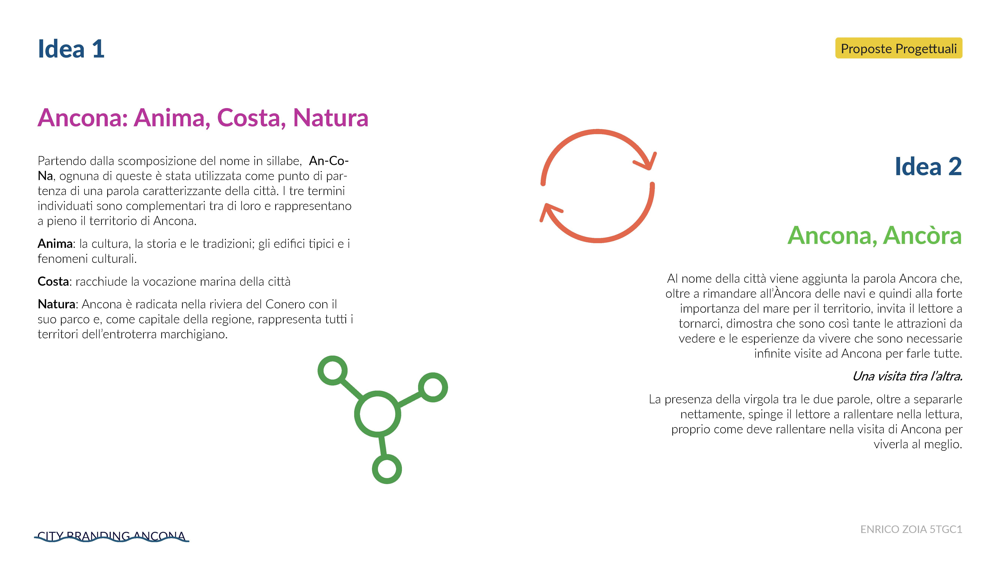
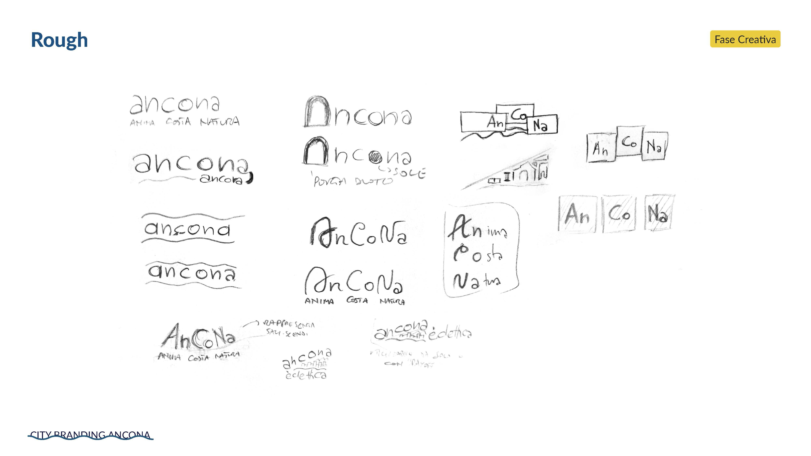
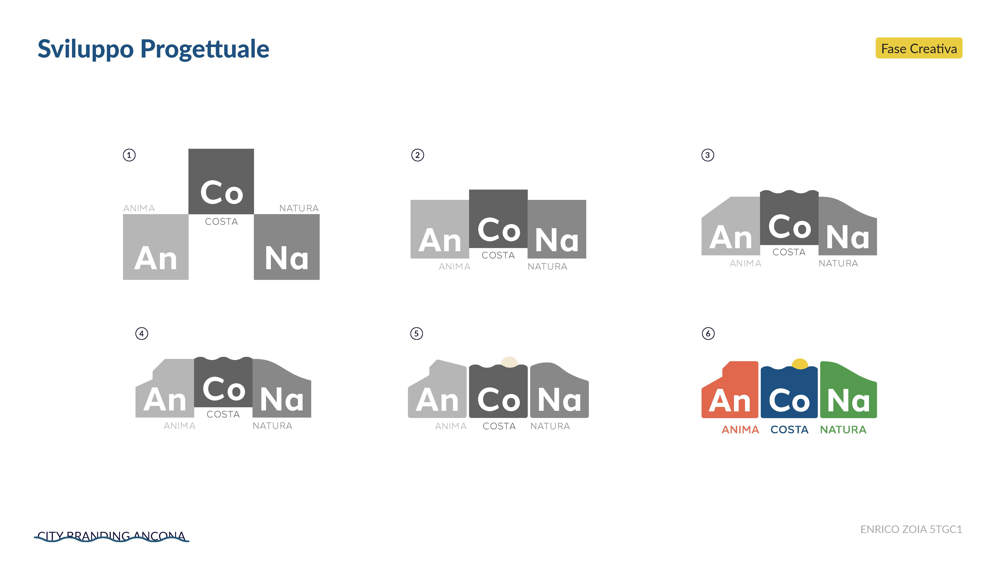

Realizzazione, sul modello del contest
promosso da AIAP, di un City Branding per la città di Ancona corredato da un piano di
comunicazione della durata di 2 anni per valorizzare il territorio e l'identità della città,
proponendola come destinazione autentica e innovativa rivolgendosi sia a potenziali turisti che ai
cittadini.
Il simbolo progettato racchiude i tre valori alla base di questa poliedrica
città:
Anima, Costa e Natura, ognuno caratterizzato da una forma e un colore. Grazie alla sua modularità,
risulta
molto versatile e dinamico.
Il piano di comunicazione integrato - suddiviso per fase di teaser,
lancio, consolidamento e recall - rispecchia lo spirito vivace della città unendo installazioni e
attività sul territorio a prodotti editoriali e campagne di marketing digitale.
Gennaio 2026


